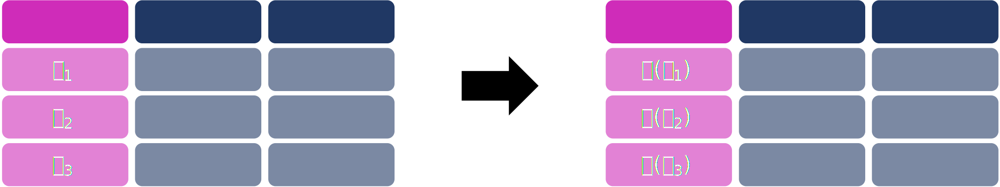

## Loading modules
import os
import polars as pl
import pandas as pd
import seaborn as sns
import numpy as np
Important
You can download this notebook from Github
1 Why polars?
There are three characteristics which, from my perspective, make polars a pretty cool library:
Allows for data larger than RAM: It helps manipulate datasets that are larger than
RAMmemory. This means that you can manipulate any data as long as it fits your hard-drive.Fast A quick comparison of
polarsvspandasshows thatpolarsis faster from 2x up to 46x times faster thanpandas.One of the key reasons polars is faster is that it allows for
parallelcomputation out-of-the -box.Polarsallows the user to performlazyevaluations (to be explained later) and thus optimizes queries.
You can get more info about polars at their website.
2 Preparing for the tutorial
2.1 Installation
2.1.1 From pip
If you are using pip you can install via:
pip install polars[all]2.1.2 From conda
If you are using conda, first activate your environment and then:
conda install -c conda-forge -y polars numpy pyarrow xlsx2csv pandasIf you are using Windows you might also need to install the timezone package.
2.2 Data
For the purpose of the tutorial I’m using three different databases.
covidmx.parquet Mexico’s COVID-19 cases open dataset. This database contains millions of registries that cannot be processed in using RAM memory only. The original data has been downloaded from Mexico’s Health Ministry. However, for the purpose of this tutorial I’ve already pre-formatted the data from the ministry.
inegi_population.csv Mexico’s population by state, municipality and locality according to 2020’s census. Data comes from Mexico’s Institute of Statistics and Geography (INEGI).
penguins.csv The classical
palmerpenguinsdataset. Contains information of penguins in Antartida collected from the Palmer Station.
Important
Download the data from the Open Science Framework and save it into your working directory.
2.3 Additional modules
Some of the modules we are using for this tutorial are:
os For setting file paths, directories and other operating-system dependent functions.
polars Basic for the tutorial!
pandas To transform the data so that the jupyter notebook and the seaborn plots can use them
numpy For special numeric functions
3 Reading data
3.1 Basic reading
Data can be read from csv files (read_csv), parquet files1 (read_parquet), Excel files (read_excel) and databases from other sources such as SQL (read_database) and Delta Lakes (read_delta). See the documentation for more database-input options.
One can read the penguins csv file:
penguins = pl.read_csv("penguins.csv", null_values = "NA") #Missing values in the csv are represented as "NA"A quick description of the variables can be obtained with glimpse:
penguins.glimpse()Rows: 344
Columns: 8
$ species <str> Adelie, Adelie, Adelie, Adelie, Adelie, Adelie, Adelie, Adelie, Adelie, Adelie
$ island <str> Torgersen, Torgersen, Torgersen, Torgersen, Torgersen, Torgersen, Torgersen, Torgersen, Torgersen, Torgersen
$ bill_length_mm <f64> 39.1, 39.5, 40.3, None, 36.7, 39.3, 38.9, 39.2, 34.1, 42.0
$ bill_depth_mm <f64> 18.7, 17.4, 18.0, None, 19.3, 20.6, 17.8, 19.6, 18.1, 20.2
$ flipper_length_mm <i64> 181, 186, 195, None, 193, 190, 181, 195, 193, 190
$ body_mass_g <i64> 3750, 3800, 3250, None, 3450, 3650, 3625, 4675, 3475, 4250
$ sex <str> male, female, female, None, female, male, female, male, None, None
$ year <i64> 2007, 2007, 2007, 2007, 2007, 2007, 2007, 2007, 2007, 2007
One can obtain descriptors for the number of rows and number of columns with the shape attribute:
penguins.shape(344, 8)Equivalent attributes are the width (number of columns) and height (number of rows)
print("There are %d columns," % penguins.width)
print("and %d rows." % penguins.height)There are 8 columns,
and 344 rows.One can also take a look at the first n=7 rows with head:
penguins.head(n=7)
shape: (7, 8)
| species | island | bill_length_mm | bill_depth_mm | flipper_length_mm | body_mass_g | sex | year |
|---|---|---|---|---|---|---|---|
| str | str | f64 | f64 | i64 | i64 | str | i64 |
| "Adelie" | "Torgersen" | 39.1 | 18.7 | 181 | 3750 | "male" | 2007 |
| "Adelie" | "Torgersen" | 39.5 | 17.4 | 186 | 3800 | "female" | 2007 |
| "Adelie" | "Torgersen" | 40.3 | 18.0 | 195 | 3250 | "female" | 2007 |
| "Adelie" | "Torgersen" | null | null | null | null | null | 2007 |
| "Adelie" | "Torgersen" | 36.7 | 19.3 | 193 | 3450 | "female" | 2007 |
| "Adelie" | "Torgersen" | 39.3 | 20.6 | 190 | 3650 | "male" | 2007 |
| "Adelie" | "Torgersen" | 38.9 | 17.8 | 181 | 3625 | "female" | 2007 |
The last n=3 rows of the dataset can be displayed with tail:
penguins.tail(n=3)
shape: (3, 8)
| species | island | bill_length_mm | bill_depth_mm | flipper_length_mm | body_mass_g | sex | year |
|---|---|---|---|---|---|---|---|
| str | str | f64 | f64 | i64 | i64 | str | i64 |
| "Chinstrap" | "Dream" | 49.6 | 18.2 | 193 | 3775 | "male" | 2009 |
| "Chinstrap" | "Dream" | 50.8 | 19.0 | 210 | 4100 | "male" | 2009 |
| "Chinstrap" | "Dream" | 50.2 | 18.7 | 198 | 3775 | "female" | 2009 |
By default, jupyter notebooks only allow us to display a certain amount of rows (display.max_rows), columns (display.max_columns) and with a certain width (display.max_colwidth). This can be changed globally by putting pd.option_context at the start of the script or just for one print with a with (which creates a context). As jupyter is designed for pandas one needs to convert the polars DataFrame into a pandas one with to_pandas(). For example, here we are only showing the first 3 columns (including the row number) and 12 rows:
with pd.option_context('display.max_rows', 12, 'display.max_columns', 3,'display.max_colwidth', None):
display(penguins.to_pandas().head(n=12)) #Notice that head must be specified here| species | ... | year | |
|---|---|---|---|
| 0 | Adelie | ... | 2007 |
| 1 | Adelie | ... | 2007 |
| 2 | Adelie | ... | 2007 |
| 3 | Adelie | ... | 2007 |
| 4 | Adelie | ... | 2007 |
| 5 | Adelie | ... | 2007 |
| 6 | Adelie | ... | 2007 |
| 7 | Adelie | ... | 2007 |
| 8 | Adelie | ... | 2007 |
| 9 | Adelie | ... | 2007 |
| 10 | Adelie | ... | 2007 |
| 11 | Adelie | ... | 2007 |
12 rows × 8 columns
The sample command obtains a random sample (without replacement) of the rows of size n and keeps it. This command is ideal for debugging polars programs as it allows the user to create a smaller database of which one can keep a track of. For example, the following obtains a random sample of size 9 of the data:
penguins.sample(n = 9)
shape: (9, 8)
| species | island | bill_length_mm | bill_depth_mm | flipper_length_mm | body_mass_g | sex | year |
|---|---|---|---|---|---|---|---|
| str | str | f64 | f64 | i64 | i64 | str | i64 |
| "Adelie" | "Biscoe" | 37.6 | 19.1 | 194 | 3750 | "male" | 2008 |
| "Gentoo" | "Biscoe" | 45.0 | 15.4 | 220 | 5050 | "male" | 2008 |
| "Adelie" | "Biscoe" | 36.5 | 16.6 | 181 | 2850 | "female" | 2008 |
| "Gentoo" | "Biscoe" | 52.2 | 17.1 | 228 | 5400 | "male" | 2009 |
| "Adelie" | "Biscoe" | 38.6 | 17.2 | 199 | 3750 | "female" | 2009 |
| "Chinstrap" | "Dream" | 49.0 | 19.5 | 210 | 3950 | "male" | 2008 |
| "Adelie" | "Dream" | 39.5 | 16.7 | 178 | 3250 | "female" | 2007 |
| "Gentoo" | "Biscoe" | 49.6 | 16.0 | 225 | 5700 | "male" | 2008 |
| "Chinstrap" | "Dream" | 49.6 | 18.2 | 193 | 3775 | "male" | 2009 |
To obtain an array of the column names one can do:
penguins.columns['species',
'island',
'bill_length_mm',
'bill_depth_mm',
'flipper_length_mm',
'body_mass_g',
'sex',
'year']3.2 Advanced reading (scanning)
Larger datasets benefit from scanning. When a file is scanned it is not read. polars only registers that it willread it. To actually read it you need to perform a collect after a scan. This is useful as polars optimizes all the queries you produce into the scan so that when you collect you obtain a faster result than performing the operations one by one.
Let’s see an example by reading the covidmx dataset and removing all rows except for those ones that occured in Mexico City which corresponds to ENTIDAD_UM == "09".
%timeit -n1 -r1 pl.read_parquet("covidmx.parquet").filter(pl.col("ENTIDAD_UM") == "09")20.9 s ± 0 ns per loop (mean ± std. dev. of 1 run, 1 loop each)The previous line reads the complete file and then filters by ensuring to keep only the values where the column ENTIDAD_UM equals "09". If we use scan its way faster as it will collapses the scan and the filter into one operation and reads only the columns that have a 09 value
%timeit -n1 -r1 pl.scan_parquet("covidmx.parquet").filter(pl.col("ENTIDAD_UM") == "09").collect()9.13 s ± 0 ns per loop (mean ± std. dev. of 1 run, 1 loop each)This idea of not conducting all operations till all the queries are given is called lazy evaluation and is one of the keys for polars’ speed.
3.3 Exercise
- Read the
inegi_population.csvfile, - Obtain a random sample of
n = 50rows, - Display the complete random sample (all rows and columns) in the jupyter notebook.
4 Thinking polars
By design, polars data should be in a tidy format with rows corresponding to observations and columns corresponding to variables measured from those observations.

Polars is optimized, by design, for columnar data; in particular for its storage. Let’s talk about it for a second.
4.1 SIMD
Let’s think of the data for a second. Consider the first five entries of the following subset of the data:
penguins.select(pl.col("bill_length_mm","sex","year")).head()
shape: (5, 3)
| bill_length_mm | sex | year |
|---|---|---|
| f64 | str | i64 |
| 39.1 | "male" | 2007 |
| 39.5 | "female" | 2007 |
| 40.3 | "female" | 2007 |
| null | null | 2007 |
| 36.7 | "female" | 2007 |
The first one, bill_length_mm is a float (f64) which allows for decimal numbers, the second one, sex is a string (str) while the last one, year is an integer (i64). Each of these columns have types (dtypes in Python) that allow for different operations. For example, one can sum +1 to both bill_length_mm and year but not to sex.
The traditional way to represents data in memory is rowwise which means that the first entry of the float bill_length_mm row is next-to (in memory) the string sex whose memory address is next to the integer year. That means that performing operations in one column (say summing +1 to year) involves jumping through different memory addresses.

DataFrame being stored into memory with two different formats rowwise and columnwiseThe columnar format of data stores one column in contiguous memory addresses, then the next column and then the next one. Modern processors are equipped with a gizmo called single instruction, multiple data (SIMD). SIMD allows for instructions to be performed in memory blocks without specifying the specific address of each member of the block. Thus, storing the columns next to each other generates memory blocks into which SIMD can be applied.
While, for summing +1 in the classical rowwise data storage one has to go specifying the memory address of the first year, then the address of the second and so on; in the columar approach one has only to specify the year memory block.
4.2 Why should I care?
Polars is designed with the columnar format in mind. That means that to conduct operations in your DataFrame one has to think the operations as operations for the whole column. This doesn’t mean that rowwise operations cannot be done. However, rowwise operations (as well as for loops) are usually suboptimal for polars DataFrames.
5 DataFrame expressions
In this section, we discuss several transformations one can apply into the DataFrame.
5.1 How to keep/remove stuff
5.1.1 Select
select chooses which columns to keep or dropThe select command allows users to choose which columns to keep. This can be done by specifying the columns:
penguins.select(pl.col("sex","species")).head()
shape: (5, 2)
| sex | species |
|---|---|
| str | str |
| "male" | "Adelie" |
| "female" | "Adelie" |
| "female" | "Adelie" |
| null | "Adelie" |
| "female" | "Adelie" |
Tip
Code is usually formatted rowwise to avoid run-ons so that each instruction has its row
(penguins
.select(pl.col("sex","species"))
.head())
shape: (5, 2)
| sex | species |
|---|---|
| str | str |
| "male" | "Adelie" |
| "female" | "Adelie" |
| "female" | "Adelie" |
| null | "Adelie" |
| "female" | "Adelie" |
One can select all columns with .all:
(penguins
.select(pl.all())
.head())
shape: (5, 8)
| species | island | bill_length_mm | bill_depth_mm | flipper_length_mm | body_mass_g | sex | year |
|---|---|---|---|---|---|---|---|
| str | str | f64 | f64 | i64 | i64 | str | i64 |
| "Adelie" | "Torgersen" | 39.1 | 18.7 | 181 | 3750 | "male" | 2007 |
| "Adelie" | "Torgersen" | 39.5 | 17.4 | 186 | 3800 | "female" | 2007 |
| "Adelie" | "Torgersen" | 40.3 | 18.0 | 195 | 3250 | "female" | 2007 |
| "Adelie" | "Torgersen" | null | null | null | null | null | 2007 |
| "Adelie" | "Torgersen" | 36.7 | 19.3 | 193 | 3450 | "female" | 2007 |
The all command can be combined with the exclude to remove specific columns:
(penguins
.select(pl.all().exclude("island"))
.head())
shape: (5, 7)
| species | bill_length_mm | bill_depth_mm | flipper_length_mm | body_mass_g | sex | year |
|---|---|---|---|---|---|---|
| str | f64 | f64 | i64 | i64 | str | i64 |
| "Adelie" | 39.1 | 18.7 | 181 | 3750 | "male" | 2007 |
| "Adelie" | 39.5 | 17.4 | 186 | 3800 | "female" | 2007 |
| "Adelie" | 40.3 | 18.0 | 195 | 3250 | "female" | 2007 |
| "Adelie" | null | null | null | null | null | 2007 |
| "Adelie" | 36.7 | 19.3 | 193 | 3450 | "female" | 2007 |
The previous code is equivalent to using the drop function. Note that by design drop doesn’t use pl.col while select does.
(penguins
.drop("island")
.head())
shape: (5, 7)
| species | bill_length_mm | bill_depth_mm | flipper_length_mm | body_mass_g | sex | year |
|---|---|---|---|---|---|---|
| str | f64 | f64 | i64 | i64 | str | i64 |
| "Adelie" | 39.1 | 18.7 | 181 | 3750 | "male" | 2007 |
| "Adelie" | 39.5 | 17.4 | 186 | 3800 | "female" | 2007 |
| "Adelie" | 40.3 | 18.0 | 195 | 3250 | "female" | 2007 |
| "Adelie" | null | null | null | null | null | 2007 |
| "Adelie" | 36.7 | 19.3 | 193 | 3450 | "female" | 2007 |
Regular expressions can be used to select or exclude specific columns matching the expression. For example, to keep those that end up in mm:
import polars.selectors as cs
(penguins
.select(cs.matches("_mm"))
.head())
shape: (5, 3)
| bill_length_mm | bill_depth_mm | flipper_length_mm |
|---|---|---|
| f64 | f64 | i64 |
| 39.1 | 18.7 | 181 |
| 39.5 | 17.4 | 186 |
| 40.3 | 18.0 | 195 |
| null | null | null |
| 36.7 | 19.3 | 193 |
To exclude them one needs to negate the operation with ~:
(penguins
.select(~cs.matches("_mm"))
.head())
shape: (5, 5)
| species | island | body_mass_g | sex | year |
|---|---|---|---|---|
| str | str | i64 | str | i64 |
| "Adelie" | "Torgersen" | 3750 | "male" | 2007 |
| "Adelie" | "Torgersen" | 3800 | "female" | 2007 |
| "Adelie" | "Torgersen" | 3250 | "female" | 2007 |
| "Adelie" | "Torgersen" | null | null | 2007 |
| "Adelie" | "Torgersen" | 3450 | "female" | 2007 |
Boolean operations can be applied inside a select thus allowing to apply an and
(penguins
.select(cs.matches("_mm") & cs.matches("length"))
.head())
shape: (5, 2)
| bill_length_mm | flipper_length_mm |
|---|---|
| f64 | i64 |
| 39.1 | 181 |
| 39.5 | 186 |
| 40.3 | 195 |
| null | null |
| 36.7 | 193 |
or an or
(penguins
.select(cs.matches("_mm") | cs.matches("island"))
.head())
shape: (5, 4)
| bill_length_mm | bill_depth_mm | flipper_length_mm | island |
|---|---|---|---|
| f64 | f64 | i64 | str |
| 39.1 | 18.7 | 181 | "Torgersen" |
| 39.5 | 17.4 | 186 | "Torgersen" |
| 40.3 | 18.0 | 195 | "Torgersen" |
| null | null | null | "Torgersen" |
| 36.7 | 19.3 | 193 | "Torgersen" |
Columns can also be selected by dtype with the cs.integer(), cs.float(), cs.numeric() (float and int), cs.string(), cs.datetime() as well as additional selectors specified in the manual
#Select all numeric except year. The - acts as a set difference operator.
(penguins
.select(cs.numeric() - cs.matches("year"))
.head())
shape: (5, 4)
| bill_length_mm | bill_depth_mm | flipper_length_mm | body_mass_g |
|---|---|---|---|
| f64 | f64 | i64 | i64 |
| 39.1 | 18.7 | 181 | 3750 |
| 39.5 | 17.4 | 186 | 3800 |
| 40.3 | 18.0 | 195 | 3250 |
| null | null | null | null |
| 36.7 | 19.3 | 193 | 3450 |
5.1.2 Filter
filter chooses which rows to keep or dropThe filter command allows users to choose which rows to keep based upon some boolean conditions of the columns. For example one can select those penguins which have a body_mass_g greater than 3500
(penguins
.filter(pl.col("body_mass_g") >= 3500)
.head())
shape: (5, 8)
| species | island | bill_length_mm | bill_depth_mm | flipper_length_mm | body_mass_g | sex | year |
|---|---|---|---|---|---|---|---|
| str | str | f64 | f64 | i64 | i64 | str | i64 |
| "Adelie" | "Torgersen" | 39.1 | 18.7 | 181 | 3750 | "male" | 2007 |
| "Adelie" | "Torgersen" | 39.5 | 17.4 | 186 | 3800 | "female" | 2007 |
| "Adelie" | "Torgersen" | 39.3 | 20.6 | 190 | 3650 | "male" | 2007 |
| "Adelie" | "Torgersen" | 38.9 | 17.8 | 181 | 3625 | "female" | 2007 |
| "Adelie" | "Torgersen" | 39.2 | 19.6 | 195 | 4675 | "male" | 2007 |
More complicated filters can be obtained by combining the logical and &, or |, not ~ and difference - operators:
# Keep only Gentoo penguins with bills larger than 50 or flippers smaller than 170.
(penguins
.filter((pl.col("species") == "Gentoo") & ((pl.col("flipper_length_mm") < 170) | (pl.col("bill_length_mm") > 50)))
.head())
shape: (5, 8)
| species | island | bill_length_mm | bill_depth_mm | flipper_length_mm | body_mass_g | sex | year |
|---|---|---|---|---|---|---|---|
| str | str | f64 | f64 | i64 | i64 | str | i64 |
| "Gentoo" | "Biscoe" | 50.2 | 14.3 | 218 | 5700 | "male" | 2007 |
| "Gentoo" | "Biscoe" | 59.6 | 17.0 | 230 | 6050 | "male" | 2007 |
| "Gentoo" | "Biscoe" | 50.5 | 15.9 | 222 | 5550 | "male" | 2008 |
| "Gentoo" | "Biscoe" | 50.5 | 15.9 | 225 | 5400 | "male" | 2008 |
| "Gentoo" | "Biscoe" | 50.1 | 15.0 | 225 | 5000 | "male" | 2008 |
An important filtering command is the is_in. This checks whether a column is in an array of values:
(penguins
.filter(pl.col("species").is_in(["Gentoo","Adelie","Happy Feet"]))
.sample(n=5))
shape: (5, 8)
| species | island | bill_length_mm | bill_depth_mm | flipper_length_mm | body_mass_g | sex | year |
|---|---|---|---|---|---|---|---|
| str | str | f64 | f64 | i64 | i64 | str | i64 |
| "Gentoo" | "Biscoe" | 46.7 | 15.3 | 219 | 5200 | "male" | 2007 |
| "Adelie" | "Dream" | 36.0 | 17.8 | 195 | 3450 | "female" | 2009 |
| "Gentoo" | "Biscoe" | 43.5 | 15.2 | 213 | 4650 | "female" | 2009 |
| "Adelie" | "Torgersen" | 38.5 | 17.9 | 190 | 3325 | "female" | 2009 |
| "Gentoo" | "Biscoe" | 45.1 | 14.5 | 207 | 5050 | "female" | 2007 |
5.1.3 Special selectors
5.1.3.1 take_every
returns every nth row of the DataFrame

take_every chooses every nth row#Return every third penguin
(penguins
.take_every(n=3)
.head())
shape: (5, 8)
| species | island | bill_length_mm | bill_depth_mm | flipper_length_mm | body_mass_g | sex | year |
|---|---|---|---|---|---|---|---|
| str | str | f64 | f64 | i64 | i64 | str | i64 |
| "Adelie" | "Torgersen" | 39.1 | 18.7 | 181 | 3750 | "male" | 2007 |
| "Adelie" | "Torgersen" | null | null | null | null | null | 2007 |
| "Adelie" | "Torgersen" | 38.9 | 17.8 | 181 | 3625 | "female" | 2007 |
| "Adelie" | "Torgersen" | 42.0 | 20.2 | 190 | 4250 | null | 2007 |
| "Adelie" | "Torgersen" | 41.1 | 17.6 | 182 | 3200 | "female" | 2007 |
5.1.3.2 top_k
Returns the first k values of a column either by ascending or descending order

top_k chooses every nth row#Return the top 3 fatter penguins:
(penguins
.top_k(k=5, by = "body_mass_g", descending=True, nulls_last=True)
.head())
shape: (5, 8)
| species | island | bill_length_mm | bill_depth_mm | flipper_length_mm | body_mass_g | sex | year |
|---|---|---|---|---|---|---|---|
| str | str | f64 | f64 | i64 | i64 | str | i64 |
| "Chinstrap" | "Dream" | 46.9 | 16.6 | 192 | 2700 | "female" | 2008 |
| "Adelie" | "Biscoe" | 36.5 | 16.6 | 181 | 2850 | "female" | 2008 |
| "Adelie" | "Biscoe" | 36.4 | 17.1 | 184 | 2850 | "female" | 2008 |
| "Adelie" | "Torgersen" | 38.6 | 17.0 | 188 | 2900 | "female" | 2009 |
| "Adelie" | "Dream" | 33.1 | 16.1 | 178 | 2900 | "female" | 2008 |
5.1.3.3 drop_null
Removes all rows that have missing values in a certain column (leave blank for all columns)

drop_null removes all null rows that have null values from a column (or all columns)#Compare against the take_every 3 previously specified
(penguins
.take_every(n=3)
.drop_nulls(["bill_length_mm"])
.head())
shape: (5, 8)
| species | island | bill_length_mm | bill_depth_mm | flipper_length_mm | body_mass_g | sex | year |
|---|---|---|---|---|---|---|---|
| str | str | f64 | f64 | i64 | i64 | str | i64 |
| "Adelie" | "Torgersen" | 39.1 | 18.7 | 181 | 3750 | "male" | 2007 |
| "Adelie" | "Torgersen" | 38.9 | 17.8 | 181 | 3625 | "female" | 2007 |
| "Adelie" | "Torgersen" | 42.0 | 20.2 | 190 | 4250 | null | 2007 |
| "Adelie" | "Torgersen" | 41.1 | 17.6 | 182 | 3200 | "female" | 2007 |
| "Adelie" | "Torgersen" | 36.6 | 17.8 | 185 | 3700 | "female" | 2007 |
5.1.4 Exercise
Answer the following questions:
How many Adelie penguins are from Biscoe Island?
What is the proportion of male penguins in the database?
What’s the probability that a penguin with flippers less than
200mm has a body mass greater than 5000?Which species has the penguins with the largest bills?
5.2 How to change columns
5.2.1 with_columns
To change columns one has to select the column with pl.col and then apply a function to it within the with_columns context. Here is an example where we transform the body mass in grams to kilograms dividing by 1000.

with_columns operates functions columnwise(penguins
.with_columns(
pl.col("body_mass_g")/1000
)
.head()
)
shape: (5, 8)
| species | island | bill_length_mm | bill_depth_mm | flipper_length_mm | body_mass_g | sex | year |
|---|---|---|---|---|---|---|---|
| str | str | f64 | f64 | i64 | f64 | str | i64 |
| "Adelie" | "Torgersen" | 39.1 | 18.7 | 181 | 3.75 | "male" | 2007 |
| "Adelie" | "Torgersen" | 39.5 | 17.4 | 186 | 3.8 | "female" | 2007 |
| "Adelie" | "Torgersen" | 40.3 | 18.0 | 195 | 3.25 | "female" | 2007 |
| "Adelie" | "Torgersen" | null | null | null | null | null | 2007 |
| "Adelie" | "Torgersen" | 36.7 | 19.3 | 193 | 3.45 | "female" | 2007 |
To avoid overwritting columns we can save the new column using alias
(penguins
.with_columns(
(pl.col("body_mass_g")/1000).alias("body_mass_kg")
)
.head()
)
shape: (5, 9)
| species | island | bill_length_mm | bill_depth_mm | flipper_length_mm | body_mass_g | sex | year | body_mass_kg |
|---|---|---|---|---|---|---|---|---|
| str | str | f64 | f64 | i64 | i64 | str | i64 | f64 |
| "Adelie" | "Torgersen" | 39.1 | 18.7 | 181 | 3750 | "male" | 2007 | 3.75 |
| "Adelie" | "Torgersen" | 39.5 | 17.4 | 186 | 3800 | "female" | 2007 | 3.8 |
| "Adelie" | "Torgersen" | 40.3 | 18.0 | 195 | 3250 | "female" | 2007 | 3.25 |
| "Adelie" | "Torgersen" | null | null | null | null | null | 2007 | null |
| "Adelie" | "Torgersen" | 36.7 | 19.3 | 193 | 3450 | "female" | 2007 | 3.45 |
Tip
In general, columns can be modify within a context. For the purpose of the tutorial we’ll be using the with_columns context. However, this is not the only one and advanced users can take advantage of the select context to overwrite columns.
Numpy’s ufuncs (special type of numpy functions) can be applied to each column. See here for a list of all of the possible functions
(penguins
.with_columns(
(np.log(pl.col("bill_depth_mm"))).alias("bill_depth_log") #Set name with alias
)
.head()
)/usr/local/Caskroom/miniconda/base/envs/polars tutorial/lib/python3.10/site-packages/polars/series/series.py:1114: RuntimeWarning: divide by zero encountered in log
series = f(lambda out: ufunc(*args, out=out, dtype=dtype_char, **kwargs))
shape: (5, 9)
| species | island | bill_length_mm | bill_depth_mm | flipper_length_mm | body_mass_g | sex | year | bill_depth_log |
|---|---|---|---|---|---|---|---|---|
| str | str | f64 | f64 | i64 | i64 | str | i64 | f64 |
| "Adelie" | "Torgersen" | 39.1 | 18.7 | 181 | 3750 | "male" | 2007 | 2.928524 |
| "Adelie" | "Torgersen" | 39.5 | 17.4 | 186 | 3800 | "female" | 2007 | 2.85647 |
| "Adelie" | "Torgersen" | 40.3 | 18.0 | 195 | 3250 | "female" | 2007 | 2.890372 |
| "Adelie" | "Torgersen" | null | null | null | null | null | 2007 | null |
| "Adelie" | "Torgersen" | 36.7 | 19.3 | 193 | 3450 | "female" | 2007 | 2.960105 |
It is also possible to apply a function across different columns using selections. For example transforming all milimiter variables to inches:
to_inches = 0.393701
(penguins
.with_columns(
(cs.ends_with("mm")*to_inches).suffix("_inch")
)
.head()
)
shape: (5, 11)
| species | island | bill_length_mm | bill_depth_mm | flipper_length_mm | body_mass_g | sex | year | bill_length_mm_inch | bill_depth_mm_inch | flipper_length_mm_inch |
|---|---|---|---|---|---|---|---|---|---|---|
| str | str | f64 | f64 | i64 | i64 | str | i64 | f64 | f64 | f64 |
| "Adelie" | "Torgersen" | 39.1 | 18.7 | 181 | 3750 | "male" | 2007 | 15.393709 | 7.3622087 | 71.259881 |
| "Adelie" | "Torgersen" | 39.5 | 17.4 | 186 | 3800 | "female" | 2007 | 15.55119 | 6.850397 | 73.228386 |
| "Adelie" | "Torgersen" | 40.3 | 18.0 | 195 | 3250 | "female" | 2007 | 15.86615 | 7.086618 | 76.771695 |
| "Adelie" | "Torgersen" | null | null | null | null | null | 2007 | null | null | null |
| "Adelie" | "Torgersen" | 36.7 | 19.3 | 193 | 3450 | "female" | 2007 | 14.448827 | 7.598429 | 75.984293 |
Notice that the suffix (as well as prefix) add to the column name. More advanced names can be achieved via map_alias which applies a function to the column names.
5.2.2 lit
To generate a new constant column one can use the pl.lit expression. The alias gives a name to the column
lit creates a new column from a constant(penguins
.with_columns(
pl.lit(13).alias("Unlucky column")
)
.head()
)
shape: (5, 9)
| species | island | bill_length_mm | bill_depth_mm | flipper_length_mm | body_mass_g | sex | year | Unlucky column |
|---|---|---|---|---|---|---|---|---|
| str | str | f64 | f64 | i64 | i64 | str | i64 | i32 |
| "Adelie" | "Torgersen" | 39.1 | 18.7 | 181 | 3750 | "male" | 2007 | 13 |
| "Adelie" | "Torgersen" | 39.5 | 17.4 | 186 | 3800 | "female" | 2007 | 13 |
| "Adelie" | "Torgersen" | 40.3 | 18.0 | 195 | 3250 | "female" | 2007 | 13 |
| "Adelie" | "Torgersen" | null | null | null | null | null | 2007 | 13 |
| "Adelie" | "Torgersen" | 36.7 | 19.3 | 193 | 3450 | "female" | 2007 | 13 |
5.2.3 when, then, otherwise
when, then, otherwise apply different functions based upon distinct conditionsCases can be handled via the when, then, otherwise triad which work as an if_else or a switch. The when specifies a condition, then specifies the necessary operations and otherwise works as a default. For example, considering the following problem of classifying penguins as “large” if they are Adelie with mass larger than 4000. And “small” otherwise. This can be coded as follows:
(penguins
.with_columns(
pl.when((pl.col("species") == "Adelie") & pl.col("body_mass_g") > 4000)
.then(pl.lit("Large"))
.otherwise(pl.lit("Small"))
.alias("size")
)
.head()
)
shape: (5, 9)
| species | island | bill_length_mm | bill_depth_mm | flipper_length_mm | body_mass_g | sex | year | size |
|---|---|---|---|---|---|---|---|---|
| str | str | f64 | f64 | i64 | i64 | str | i64 | str |
| "Adelie" | "Torgersen" | 39.1 | 18.7 | 181 | 3750 | "male" | 2007 | "Small" |
| "Adelie" | "Torgersen" | 39.5 | 17.4 | 186 | 3800 | "female" | 2007 | "Small" |
| "Adelie" | "Torgersen" | 40.3 | 18.0 | 195 | 3250 | "female" | 2007 | "Small" |
| "Adelie" | "Torgersen" | null | null | null | null | null | 2007 | "Small" |
| "Adelie" | "Torgersen" | 36.7 | 19.3 | 193 | 3450 | "female" | 2007 | "Small" |
Multiple when can be concatenated. For example to classify the size as large if:
Large if species is Adelie and body mass is larger than 4000
Medium if species is Adelie and body mass is between 3000 and 4000
Small if species is Adelie and body mass is lower than 3000
Unclassified if species is not Adelie
(penguins
.with_columns(
pl.when((pl.col("species") == "Adelie") & (pl.col("body_mass_g") > 4000))
.then(pl.lit("Large"))
.when((pl.col("species") == "Adelie") & (pl.col("body_mass_g") >= 3000) & (pl.col("body_mass_g") <= 4000))
.then(pl.lit("Medium"))
.when((pl.col("species") == "Adelie") & (pl.col("body_mass_g") < 3000))
.then(pl.lit("Small"))
.otherwise(pl.lit("Unclassified"))
.alias("size")
)
.head()
)
shape: (5, 9)
| species | island | bill_length_mm | bill_depth_mm | flipper_length_mm | body_mass_g | sex | year | size |
|---|---|---|---|---|---|---|---|---|
| str | str | f64 | f64 | i64 | i64 | str | i64 | str |
| "Adelie" | "Torgersen" | 39.1 | 18.7 | 181 | 3750 | "male" | 2007 | "Medium" |
| "Adelie" | "Torgersen" | 39.5 | 17.4 | 186 | 3800 | "female" | 2007 | "Medium" |
| "Adelie" | "Torgersen" | 40.3 | 18.0 | 195 | 3250 | "female" | 2007 | "Medium" |
| "Adelie" | "Torgersen" | null | null | null | null | null | 2007 | "Unclassified" |
| "Adelie" | "Torgersen" | 36.7 | 19.3 | 193 | 3450 | "female" | 2007 | "Medium" |
5.2.4 rename
To rename a column the rename function has got your back. You just have to state the old_name: new_name
rename changes the name of a column(penguins
.rename({"bill_length_mm": "length_of_the_beak", "bill_depth_mm": "depth_of_the_beak"})
.head()
)
shape: (5, 8)
| species | island | length_of_the_beak | depth_of_the_beak | flipper_length_mm | body_mass_g | sex | year |
|---|---|---|---|---|---|---|---|
| str | str | f64 | f64 | i64 | i64 | str | i64 |
| "Adelie" | "Torgersen" | 39.1 | 18.7 | 181 | 3750 | "male" | 2007 |
| "Adelie" | "Torgersen" | 39.5 | 17.4 | 186 | 3800 | "female" | 2007 |
| "Adelie" | "Torgersen" | 40.3 | 18.0 | 195 | 3250 | "female" | 2007 |
| "Adelie" | "Torgersen" | null | null | null | null | null | 2007 |
| "Adelie" | "Torgersen" | 36.7 | 19.3 | 193 | 3450 | "female" | 2007 |
5.2.5 Additional stuff: max_horizontal, min_horizontal and cumsum_horizontal
These special functions get the maximum, minimum or cummulative sum across several columns. For example, consider the following DataFrame:
df = pl.DataFrame({
"a": [1, 8, 3],
"b": [4, 5, None],
"c": [1, 1, 1],
})
df.with_columns(pl.max_horizontal("a", "b"))
shape: (3, 4)
| a | b | c | max |
|---|---|---|---|
| i64 | i64 | i64 | i64 |
| 1 | 4 | 1 | 4 |
| 8 | 5 | 1 | 8 |
| 3 | null | 1 | 3 |
5.2.6 Passing arbitrary functions
Arbitrary functions can be passed into the with_columns. One should avoid as much as possible passing arbitrary functions as rowwise functions are not optimized and thus kill polars parallelization (thus making it slower).
#Function calculates x^2
def slow_square(x):
return x**2
#This calculates the squared of the bill_length _slowly_
(penguins
.with_columns(
pl.col("bill_length_mm").apply(slow_square).alias("bill_length^2")
)
.head()
)/var/folders/42/2kdf45dd1qz5n7kf9lm8ld9r0000gn/T/ipykernel_42184/3456260424.py:8: PolarsInefficientApplyWarning:
Expr.apply is significantly slower than the native expressions API.
Only use if you absolutely CANNOT implement your logic otherwise.
In this case, you can replace your `apply` with the following:
- pl.col("bill_length_mm").apply(slow_square)
+ pl.col("bill_length_mm") ** 2
pl.col("bill_length_mm").apply(slow_square).alias("bill_length^2")
shape: (5, 9)
| species | island | bill_length_mm | bill_depth_mm | flipper_length_mm | body_mass_g | sex | year | bill_length^2 |
|---|---|---|---|---|---|---|---|---|
| str | str | f64 | f64 | i64 | i64 | str | i64 | f64 |
| "Adelie" | "Torgersen" | 39.1 | 18.7 | 181 | 3750 | "male" | 2007 | 1528.81 |
| "Adelie" | "Torgersen" | 39.5 | 17.4 | 186 | 3800 | "female" | 2007 | 1560.25 |
| "Adelie" | "Torgersen" | 40.3 | 18.0 | 195 | 3250 | "female" | 2007 | 1624.09 |
| "Adelie" | "Torgersen" | null | null | null | null | null | 2007 | null |
| "Adelie" | "Torgersen" | 36.7 | 19.3 | 193 | 3450 | "female" | 2007 | 1346.89 |
5.2.7 Exercise
Create a new column with
body_massin pounds.Create a new column that assigns the coordinates for each of the islands:
| Island | Coordinates |
|---|---|
| Biscoe | 65°26′S 65°30′W |
| Dream | 64°44′S 64°14′W |
| Torgersen | 64°46′S 64°5′W |
- Biscoe island actually represents an archipelago. Rename the
islandcolumn toregioninstead to better capture this nuance.
5.3 How to aggregate columns
All datasets can be aggregated with the describe function which counts the number of null observations and obtains some summary statistics
penguins.describe()
shape: (9, 9)
| describe | species | island | bill_length_mm | bill_depth_mm | flipper_length_mm | body_mass_g | sex | year |
|---|---|---|---|---|---|---|---|---|
| str | str | str | f64 | f64 | f64 | f64 | str | f64 |
| "count" | "344" | "344" | 344.0 | 344.0 | 344.0 | 344.0 | "344" | 344.0 |
| "null_count" | "0" | "0" | 2.0 | 2.0 | 2.0 | 2.0 | "11" | 0.0 |
| "mean" | null | null | 43.92193 | 17.15117 | 200.915205 | 4201.754386 | null | 2008.02907 |
| "std" | null | null | 5.459584 | 1.974793 | 14.061714 | 801.954536 | null | 0.818356 |
| "min" | "Adelie" | "Biscoe" | 32.1 | 13.1 | 172.0 | 2700.0 | "female" | 2007.0 |
| "max" | "Gentoo" | "Torgersen" | 59.6 | 21.5 | 231.0 | 6300.0 | "male" | 2009.0 |
| "median" | null | null | 44.45 | 17.3 | 197.0 | 4050.0 | null | 2008.0 |
| "25%" | null | null | 39.2 | 15.6 | 190.0 | 3550.0 | null | 2007.0 |
| "75%" | null | null | 48.5 | 18.7 | 213.0 | 4750.0 | null | 2009.0 |
Each of these statistics corresponds to a function applied to the columns. We can replicate this by using aggregation functions:
5.3.1 Aggregation functions
Aggregation functions apply a function \(\mathbb{R}^n\to \mathbb{R}\) which collapses all column elements into a single numberThe aggregation functions apply a function to summarize column values. Basically it applies a function to the whole column and returns one value (for example the mean). This is different from the with_columns as the latter applies a function \(\mathbb{R}\to\mathbb{R}\) that returns a value for each element in the column. Meanwhile, aggregation functions collapse all columns into a value
(penguins
.select("bill_length_mm")
.mean() #Aggregation function of mean
)
shape: (1, 1)
| bill_length_mm |
|---|
| f64 |
| 43.92193 |
(penguins
.select(cs.ends_with("mm"))
.std() #Aggregation function of standard deviation
)
shape: (1, 3)
| bill_length_mm | bill_depth_mm | flipper_length_mm |
|---|---|---|
| f64 | f64 | f64 |
| 5.459584 | 1.974793 | 14.061714 |
(penguins
.select(cs.starts_with("bill"))
.quantile(0.1) #Aggregation function of quantile 0.1
)
shape: (1, 2)
| bill_length_mm | bill_depth_mm |
|---|---|
| f64 | f64 |
| 36.6 | 14.3 |
5.3.2 Grouping
groupby creates a context so that we can aggregate by another columnGrouping is one of the most important concepts in data analysis. It allows us to perform an operation on a column based upon the values of another column. For example, one can obtain the mean body mass by sex:
(penguins
.groupby("sex")
.agg(
pl.col("body_mass_g").mean()
))
shape: (3, 2)
| sex | body_mass_g |
|---|---|
| str | f64 |
| "female" | 3862.272727 |
| "male" | 4545.684524 |
| null | 4005.555556 |
Grouping supports multiple variables and multiple aggregations via agg
(penguins
.groupby(["sex","species"])
.agg(
pl.col("body_mass_g").mean().alias("average"),
pl.col("body_mass_g").std().alias("standard deviation")
))
shape: (8, 4)
| sex | species | average | standard deviation |
|---|---|---|---|
| str | str | f64 | f64 |
| "female" | "Adelie" | 3368.835616 | 269.380102 |
| "male" | "Gentoo" | 5484.836066 | 313.158596 |
| null | "Adelie" | 3540.0 | 477.166114 |
| "female" | "Chinstrap" | 3527.205882 | 285.333912 |
| "male" | "Adelie" | 4043.493151 | 346.811553 |
| "female" | "Gentoo" | 4679.741379 | 281.578294 |
| "male" | "Chinstrap" | 3938.970588 | 362.13755 |
| null | "Gentoo" | 4587.5 | 338.193731 |
For discrete variables such as sex and species aggregators also exist such as count:
(penguins
.groupby(["sex","species"])
.agg(
pl.count() #Count number of observations
))
shape: (8, 3)
| sex | species | count |
|---|---|---|
| str | str | u32 |
| "male" | "Gentoo" | 61 |
| "male" | "Chinstrap" | 34 |
| "male" | "Adelie" | 73 |
| "female" | "Gentoo" | 58 |
| "female" | "Chinstrap" | 34 |
| null | "Adelie" | 6 |
| "female" | "Adelie" | 73 |
| null | "Gentoo" | 5 |
Multiple of the commands we know can be combined as in the following example which calculates the proportion of females per species
(penguins
.groupby(["sex","species"])
.agg(
pl.count() #Count number of observations
)
.with_columns(
pl.col("count")/pl.col("count").sum()
)
.filter(pl.col("sex") == "female")
)
shape: (3, 3)
| sex | species | count |
|---|---|---|
| str | str | f64 |
| "female" | "Adelie" | 0.212209 |
| "female" | "Gentoo" | 0.168605 |
| "female" | "Chinstrap" | 0.098837 |
5.3.3 unique values
unique returns distinct observationsAn array of unique values for a column or DataFrame can be obtained via unique:
(penguins
.select("species")
.unique()
)
shape: (3, 1)
| species |
|---|
| str |
| "Adelie" |
| "Chinstrap" |
| "Gentoo" |
5.3.4 Exercise
- What’s the average bill_length of the penguins by island?
- Is there an island where the distribution of
malesandfemalesdiffers across species? - What’s the maximum weight reported by a penguin and to which species does it belong?
5.4 Timeseries specific functionality
In this section we’ll discuss rolling functions, lagging, datetimes and durations. For that purpose we’ll use the covidmx.parquet file.
covidmx = pl.read_parquet("covidmx.parquet")covidmx.glimpse() #This thing is huge!Rows: 20172065
Columns: 40
$ FECHA_ACTUALIZACION <str> 2023-08-08, 2023-08-08, 2023-08-08, 2023-08-08, 2023-08-08, 2023-08-08, 2023-08-08, 2023-08-08, 2023-08-08, 2023-08-08
$ ID_REGISTRO <str> 0ed066, accf18, 65b38d, a9c809, 5db8d9, 8004ba, 7ced56, e19494, 80989f, e9cf4c
$ ORIGEN <str> 2, 2, 2, 2, 1, 1, 2, 1, 2, 2
$ SECTOR <str> 12, 12, 12, 12, 12, 12, 12, 12, 12, 12
$ ENTIDAD_UM <str> 16, 07, 09, 03, 19, 19, 09, 19, 07, 11
$ SEXO <str> 2, 2, 2, 2, 2, 1, 2, 2, 1, 2
$ ENTIDAD_NAC <str> 16, 07, 09, 03, 19, 19, 08, 28, 07, 11
$ ENTIDAD_RES <str> 16, 07, 09, 03, 19, 19, 09, 19, 07, 11
$ MUNICIPIO_RES <str> 041, 078, 009, 003, 046, 006, 009, 025, 078, 031
$ TIPO_PACIENTE <str> 1, 1, 1, 1, 1, 2, 1, 1, 1, 1
$ FECHA_INGRESO <str> 2023-03-09, 2023-01-19, 2023-03-09, 2023-03-14, 2023-01-01, 2023-01-01, 2023-03-04, 2023-04-15, 2023-01-19, 2023-03-28
$ FECHA_SINTOMAS <str> 2023-03-06, 2023-01-15, 2023-03-07, 2023-03-10, 2023-01-01, 2023-01-01, 2023-03-01, 2023-04-15, 2023-01-14, 2023-03-24
$ FECHA_DEF <str> 9999-99-99, 9999-99-99, 9999-99-99, 9999-99-99, 9999-99-99, 9999-99-99, 9999-99-99, 9999-99-99, 9999-99-99, 9999-99-99
$ INTUBADO <str> 97, 97, 97, 97, 97, 2, 97, 97, 97, 97
$ NEUMONIA <str> 2, 2, 2, 2, 2, 2, 2, 2, 2, 2
$ EDAD <str> 28, 20, 26, 47, 39, 2, 14, 51, 43, 64
$ NACIONALIDAD <str> 1, 1, 1, 1, 1, 1, 1, 1, 1, 1
$ EMBARAZO <str> 97, 97, 97, 97, 97, 2, 97, 97, 2, 97
$ HABLA_LENGUA_INDIG <str> 2, 2, 2, 2, 2, 2, 2, 2, 2, 2
$ INDIGENA <str> 2, 2, 2, 2, 2, 2, 2, 2, 2, 2
$ DIABETES <str> 2, 2, 2, 2, 2, 2, 2, 2, 2, 2
$ EPOC <str> 2, 2, 2, 2, 2, 2, 2, 2, 2, 2
$ ASMA <str> 2, 2, 2, 2, 2, 2, 2, 2, 2, 2
$ INMUSUPR <str> 2, 2, 2, 2, 2, 2, 2, 2, 2, 2
$ HIPERTENSION <str> 2, 2, 2, 2, 2, 2, 2, 2, 2, 2
$ OTRA_COM <str> 2, 2, 2, 2, 2, 2, 2, 2, 2, 2
$ CARDIOVASCULAR <str> 2, 2, 2, 2, 2, 2, 2, 2, 2, 2
$ OBESIDAD <str> 2, 2, 2, 2, 2, 2, 2, 2, 2, 2
$ RENAL_CRONICA <str> 2, 2, 2, 2, 2, 2, 2, 2, 2, 2
$ TABAQUISMO <str> 1, 2, 2, 2, 2, 2, 2, 2, 2, 2
$ OTRO_CASO <str> 2, 2, 1, 2, 2, 2, 2, 2, 2, 2
$ TOMA_MUESTRA_LAB <str> 2, 2, 2, 2, 2, 2, 2, 2, 2, 1
$ RESULTADO_LAB <str> 97, 97, 97, 97, 97, 97, 97, 97, 97, 2
$ TOMA_MUESTRA_ANTIGENO <str> 1, 1, 1, 1, 2, 2, 1, 2, 2, 1
$ RESULTADO_ANTIGENO <str> 2, 1, 2, 2, 97, 97, 2, 97, 97, 2
$ CLASIFICACION_FINAL <str> 7, 3, 7, 7, 6, 6, 7, 6, 6, 7
$ MIGRANTE <str> 99, 99, 99, 99, 99, 99, 99, 99, 99, 99
$ PAIS_NACIONALIDAD <str> México, México, México, México, México, México, México, México, México, México
$ PAIS_ORIGEN <str> 97, 97, 97, 97, 97, 97, 97, 97, 97, 97
$ UCI <str> 97, 97, 97, 97, 97, 2, 97, 97, 97, 97
There are a lot of variables here. However, we’ll just keep the following:
FECHA_INGRESO: Database registry date (date when the case was registered in the database)
EDAD: Age in years of the person
TIPO_PACIENTE Type of patient 1 = outpatient, 2 = hospitalized
FECHA_SINTOMAS Date of symptom onset of the patient
FECHA_DEF Date of patient’s death (9999-99-99 if the person is alive)
We start by keeping only these columns and renaming them:
covidmx = (covidmx
.select(pl.col("FECHA_INGRESO","EDAD","TIPO_PACIENTE","FECHA_SINTOMAS","FECHA_DEF"))
.rename({"FECHA_INGRESO": "DATE_OF_REGISTRY",
"EDAD": "AGE",
"TIPO_PACIENTE": "PATIENT_TYPE",
"FECHA_SINTOMAS": "DATE_OF_SYMPTOM_ONSET",
"FECHA_DEF": "DATE_OF_DEATH"}))covidmx.head()
shape: (5, 5)
| DATE_OF_REGISTRY | AGE | PATIENT_TYPE | DATE_OF_SYMPTOM_ONSET | DATE_OF_DEATH |
|---|---|---|---|---|
| str | str | str | str | str |
| "2023-03-09" | "28" | "1" | "2023-03-06" | "9999-99-99" |
| "2023-01-19" | "20" | "1" | "2023-01-15" | "9999-99-99" |
| "2023-03-09" | "26" | "1" | "2023-03-07" | "9999-99-99" |
| "2023-03-14" | "47" | "1" | "2023-03-10" | "9999-99-99" |
| "2023-01-01" | "39" | "1" | "2023-01-01" | "9999-99-99" |
5.5 Casting
Notice that in the previous dataset AGE was read as a string (str) and the dates of registry, symptom onset and death were also read as strings. We can change them to integer (AGE) and dates (all other) via casting.
#Transform age to an integer
covidmx = (covidmx
.with_columns(
pl.col("AGE").cast(pl.Int64)
))
covidmx.head()
shape: (5, 5)
| DATE_OF_REGISTRY | AGE | PATIENT_TYPE | DATE_OF_SYMPTOM_ONSET | DATE_OF_DEATH |
|---|---|---|---|---|
| str | i64 | str | str | str |
| "2023-03-09" | 28 | "1" | "2023-03-06" | "9999-99-99" |
| "2023-01-19" | 20 | "1" | "2023-01-15" | "9999-99-99" |
| "2023-03-09" | 26 | "1" | "2023-03-07" | "9999-99-99" |
| "2023-03-14" | 47 | "1" | "2023-03-10" | "9999-99-99" |
| "2023-01-01" | 39 | "1" | "2023-01-01" | "9999-99-99" |
Dates can also be casted by specifying the format. In this case they are year, month, day:
covidmx = (covidmx
.with_columns(
cs.starts_with("DATE").str.strptime(pl.Datetime, "%Y-%m-%d", strict=False)
))
covidmx.head()
shape: (5, 5)
| DATE_OF_REGISTRY | AGE | PATIENT_TYPE | DATE_OF_SYMPTOM_ONSET | DATE_OF_DEATH |
|---|---|---|---|---|
| datetime[μs] | i64 | str | datetime[μs] | datetime[μs] |
| 2023-03-09 00:00:00 | 28 | "1" | 2023-03-06 00:00:00 | null |
| 2023-01-19 00:00:00 | 20 | "1" | 2023-01-15 00:00:00 | null |
| 2023-03-09 00:00:00 | 26 | "1" | 2023-03-07 00:00:00 | null |
| 2023-03-14 00:00:00 | 47 | "1" | 2023-03-10 00:00:00 | null |
| 2023-01-01 00:00:00 | 39 | "1" | 2023-01-01 00:00:00 | null |
To calculate the difference between the date of symptom onset and the registry we create a new variable of type duration:
covidmx = (covidmx
.with_columns(
(pl.col("DATE_OF_REGISTRY") - pl.col("DATE_OF_SYMPTOM_ONSET")).alias("TIME_TILL_REGISTRY")
))
covidmx.head()
shape: (5, 6)
| DATE_OF_REGISTRY | AGE | PATIENT_TYPE | DATE_OF_SYMPTOM_ONSET | DATE_OF_DEATH | TIME_TILL_REGISTRY |
|---|---|---|---|---|---|
| datetime[μs] | i64 | str | datetime[μs] | datetime[μs] | duration[μs] |
| 2023-03-09 00:00:00 | 28 | "1" | 2023-03-06 00:00:00 | null | 3d |
| 2023-01-19 00:00:00 | 20 | "1" | 2023-01-15 00:00:00 | null | 4d |
| 2023-03-09 00:00:00 | 26 | "1" | 2023-03-07 00:00:00 | null | 2d |
| 2023-03-14 00:00:00 | 47 | "1" | 2023-03-10 00:00:00 | null | 4d |
| 2023-01-01 00:00:00 | 39 | "1" | 2023-01-01 00:00:00 | null | 0µs |
This variable assigns its own time (notice the miliseconds and the day scales) but can be casted into an integer giving the number of days
covidmx = (covidmx
.with_columns(
pl.col("TIME_TILL_REGISTRY").dt.days() #Get days as integer
))
covidmx.head()5.6 Rolling functions
Let’s aggregate the patients by counting the number of patients per date of registry so that we get the number of cases per day
covidmx = (covidmx
.groupby("DATE_OF_SYMPTOM_ONSET")
.agg(pl.count())
)A quick look at the data reveals a lot of noise:
import seaborn as sns
sns.lineplot(x = "DATE_OF_SYMPTOM_ONSET", y = "count", data = covidmx.to_pandas())<Axes: xlabel='DATE_OF_SYMPTOM_ONSET', ylabel='count'>Plotting the rolling mean (i.e. the number of cases at day k is estimated as the average of the days from k - m/2 to k + m/2
covidmx = (covidmx
.sort("DATE_OF_SYMPTOM_ONSET") #First arrange by date
.with_columns(
pl.col("count").rolling_mean(window_size=7).alias("smoothed_count"),
))sns.lineplot(x = "DATE_OF_SYMPTOM_ONSET", y = "smoothed_count", data = covidmx.to_pandas())<Axes: xlabel='DATE_OF_SYMPTOM_ONSET', ylabel='smoothed_count'>Another useful grouping mechanism is the groupby_dynamic which allows to group by week, year or other time range from a date. For example, to get all cases in a year we can do the following:
(covidmx
.groupby_dynamic("DATE_OF_SYMPTOM_ONSET", every="1y")
.agg(pl.col("count").sum())
)
shape: (4, 2)
| DATE_OF_SYMPTOM_ONSET | count |
|---|---|
| datetime[μs] | u32 |
| 2020-01-01 00:00:00 | 3868396 |
| 2021-01-01 00:00:00 | 8830345 |
| 2022-01-01 00:00:00 | 6451944 |
| 2023-01-01 00:00:00 | 1021380 |
5.6.1 Writing
Once we are done with our data we can save the dataset in parquet format which can be read in most programs.
covidmx.write_parquet("covid_updated.parquet")5.6.2 Exercise
The variable
SEXOencodessexwith1= Maleand2 = Female. Use this to decide whether males or females die more (proportionally) of COVID (CLASIFICACION_FINAL = 5).A common prediction benchmark is to use the mean of the previous period to predict the next one. Calculate the mean of the previous week and use it to predict the next week for all of the observed periods. Use the root mean squared error to estimate how good/bad is this model.
Does the day of the week seem to influence how much time it takes for an individual to be registered?
5.7 Where to go from here?
The Api reference is a great place to learn about more polars functions. That, accompanied with the book teaches you all of the polars basics you need. Note that this guide hasn’t taught you all of polars’ functions but the necessary to get started.
If you still feel you need another guide, I recommend Matt Harrison’s tutorial on polars to improve your knowledge
Footnotes
Text files optimized for columnar data↩︎